# Ch5 中央处理器
# CPU 的功能和基本结构
# 功能
CPU 由运算器和控制器组成，具体功能包括：
- 指令控制
- 操作控制
- 时间控制
- 数据加工
- 中断处理
# 基本结构
- 运算器：ALU, 暂存器，ACC, GPRs, PSW, 移位寄存器， 计数器…
- 控制器：PC, IR, ID, 时序电路，未操作信号发生器…
# CPU 的寄存器
按汇编程序是否可访问分为用户可见寄存器 (GPRs, PSW, PC) 和用户不可见寄存器 (存储器地址寄存器，存储器数据寄存器，IR, 暂存寄存器，累加寄存器，移位寄存器)
各寄存器的作用：
- 在运算器中：
- GPRs
- ACC: 通用寄存器，用于暂时存放 ALU 运算的结果
- SR（移位寄存器）：存放操作数且可以移位
- 暂存寄存器：暂存从数据总线或通用寄存器送来的操作数，对应用程序员透明
- PSW：保留各种状态信息
- 在控制器中：
- PC: 存放当前指令的地址
- IR: 存放当前指令
# 指令执行过程
# 指令周期
= 取值周期 + 执行周期
间址周期在取址和执行之间
如果 CPU 在每条指令结束前都要发中断查询信号 （轮询法），后面要加上中断周期
# 指令周期的数据流
- 取址周期
- PC->MAR-> 地址总线 -> 存储器
- CU 发出读命令 -> 控制总线 -> 主存
- 主存 -> 数据总线 ->IR
- CU 发出控制信号 ->PC=PC+1
- 间址周期
取指结束后，控制单元 CU 会检查 IR 中是否有间接地址（操作数有效地址的地址）。若有，CPU 执行如下操作：
- IR (或 MDR) 的间址 ->MAR-> 地址总线 -> 主存
- CU 发出读命令 -> 控制总线 -> 主存
- 主存 -> 数据总线 ->MDR（取出有效地址存入 MDR）
-
执行周期
-
中断周期
假设程序断点存入堆栈中，push 操作先修改 SP 再存入（x86 采用满递减栈）
- CU 控制将 SP 减 1，SP->MAR-> 地址总线 ->zhucun1
- CU 发出写命令 -> 控制总线 -> 主存
- PC->MDR-> 数据总线 -> 主存（把中断时的 PC 存入栈中）
- CU 将中断服务程序入口地址存入 PC
# 指令执行方案
- 单周期处理器
CPI = 1，指令执行周期取决于执行时间最长的指令的执行时间 - 多周期处理器
CPI > 1, - 流水线处理器
理想状态下 CPI = 1，流水线并行
# 数据通路
# 功能
。
# 组成
- 组合逻辑
译码器，MUX，三态门… - 时序逻辑
包含存储信号的记忆单元
# 基本结构
2 种：
- CPU 内部总线（单总线、多总线）
- 专用数据通路
- CPU 内部单总线方式
ALU 和寄存器连接到一条总线上，性能低
单总线的 ALU 要配合暂存器使用，比如从内存取出来的数据要放在暂存器中，再从暂存器中取数据给 ALU
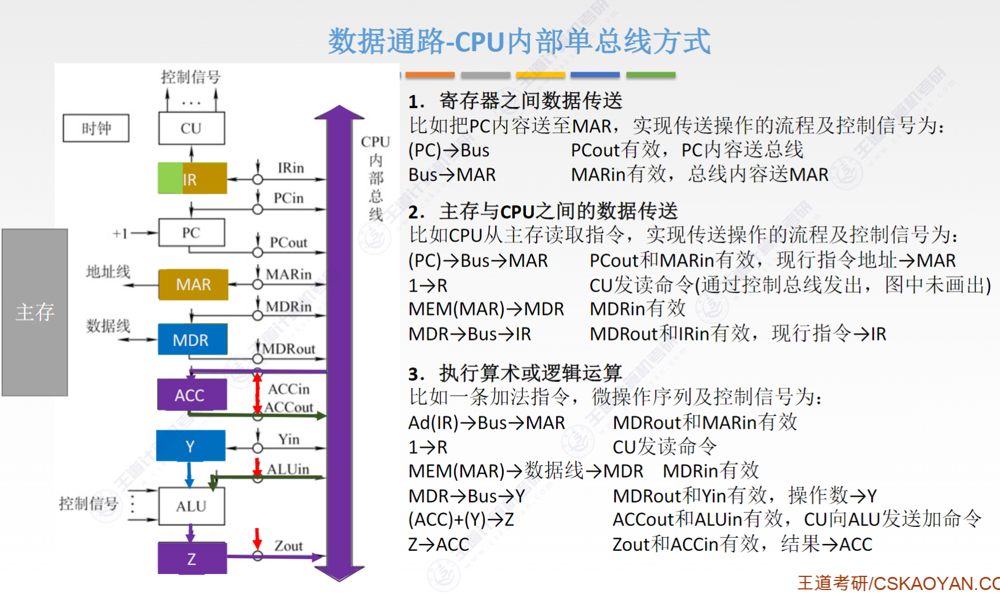
了解每条指令的 datapath - CPU 内部多总线方式
允许同时在多个总线上传送不同的数据，提高效率 - 专用数据通路方式
看图说话，没什么好说的
# 数据通路的操作举例
会画图就会
# 控制器的功能和工作原理
# 结构和功能
- 取指令，指出下一条指令的位置
- 译码或测试，产生控制信号
- 控制 CPU，主存，I/O 的数据流动方向
分为硬布线控制器和微程序控制器
# 硬布线控制器
组合逻辑控制器
CU 的输入信号来自 (1) 指令译码器 (2) 时钟脉冲 (3) 执行单元的反馈信息
比如这种：
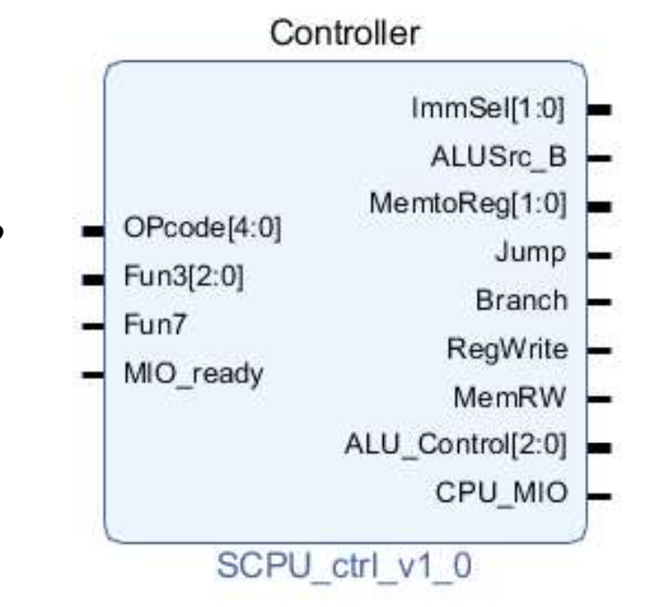
# 微程序控制器
采用存储逻辑实现，将未操作信号代码化，使没调机器指令转化成一段微程序并存入专门的控制存储器中
晚点回来学
# 异常和中断机制
# 概念
内部产生的意外事件叫异常，是同步的；外部产生的事件叫中断，是异步的
# 分类
-
异常：CPU 内部执行指令引起的异常事件，比如整除 0，溢出，单步跟踪，非法指令，栈溢出，地址越界，缺页等
-
- Fault 故障
引起故障的指令启动后、执行结束前检测到的异常事件（所以处理完之后要重新执行该指令或者无法恢复的终止进程）
- Fault 故障
-
- Trap 自陷
人为设定的特殊中断机制，最常见的是 sys call，还有断点、单步，还有一些条件自陷指令（MIPS 的 teq, teqi, tne, tnei）等
以上两种都属于软件中断
- Trap 自陷
-
- Abort 终止
执行过程中发生了硬件故障，比如控制器出错、存储器校验错、总线错误等
Abort 和外中断属于硬件中断
- Abort 终止
-
-
中断：CPU 外部比如 I/O 引起的中断，分为可屏蔽中断和不可屏蔽中断
- 可屏蔽中断：可屏蔽中断请求线 INTR 向 CPU 发出中断请求，CPU 可以设置相应的 bit 屏蔽
- 不可屏蔽中断：通过专门的不可屏蔽中断请求线 NMI 向 CPU 发出的中断请求，通常是非常紧急的硬件故障
所有的异常和终端都是由硬件检测发现的
根据识别中断服务程序地址的方式，可以分为向量中断和非向量中断；
根据中断处理过程是否允许被打断分为单重中断和多重中断
# 异常和中断的响应过程
- 关中断
保存断点和程序状态期间，把 IF 置 0 不允许响应中断 - 保存断点和程序状态
将返回地址和被中断时的 PSW 送到栈或特定寄存器中（通常是栈，才能支持嵌套中断），处理完之后恢复 - 识别异常和中断并转到相应的处理程序
异常大多采用软件识别，中断可以采用软件识别或硬件识别
软件识别：CPU 设置异常状态寄存器，操作系统使用查询程序按优先级顺序查询异常状态寄存器以检测类型并处理
硬件识别：向量中断。每个异常或中断被指定一个中断类型号，发生之后查询中断向量表，找到处理程序的入口地址（中断向量），并跳转到处理程序
# 指令流水线
- Performance via parallelism
- Performance via pipelining
- Performance via prediction
时间并行：流水线
空间并行：超标量
# 基本实现
单周期 CPU 以执行最慢的指令周期作为时钟周期。不能缩短单挑指令的执行时间，但可以提高整个程序的执行速度
每个流水段后面都要加一个流水段寄存器锁存数据，保证本段的执行结果能在下个周期给下一流水段使用。
# Hazard
- 结构冒险、数据冒险、控制冒险
- structural hazard
在流水线执行期间，两条及以上指令同一时间对同一个硬件资源发起使用的请求（Memory conflicts, Register File conflicts, Other units conflicts）
解决方法：(1) stall (2) 增加更多的硬件支持单元（比如 Double Bump，前半周期写后半周期读） - data hazard
RAW, WAR, WAW
统考不考乱序执行所以只需要考虑 RAW 写后读
解决方法：(1) stall (2) NOP (3) forwarding
- stall
硬件解决方法，流水线阻塞，使数据相关的后续指令延迟执行，也称为插入气泡（bubble） - NOP
软件解决方法，编译时插入空操作（NOP）比如addi x0,x0,0，使数据相关的后续指令延迟执行 - forwarding
旁路转发，将数据通路生成的中间数据直接往前传递到 ALU 的输入端，参与下一条指令的运算
必须同时满足两个条件： - 指令确实会写入寄存器（通过检查 RegWrite 信号）。
- 目标寄存器编号不是 x0（零寄存器不会变）
才需要 forwarding
ALU->ALU
数据可以从EX/MEM或MEM/WB阶段转发到当前在 EX 阶段的 ALU 输入
MEM->ALU
load 指令的数据只有在MEM/WB阶段才能被转发到当前在 EX 阶段的 ALU 输入，所以如果 load 下一条指令要用到 load 指令的数据，则需要先 stall 一周期再 forwarding
- control hazard
解决方法：
- 插入 3 条
NOP直到分支指令的WB阶段才进行下一条指令的IF - 分支预测
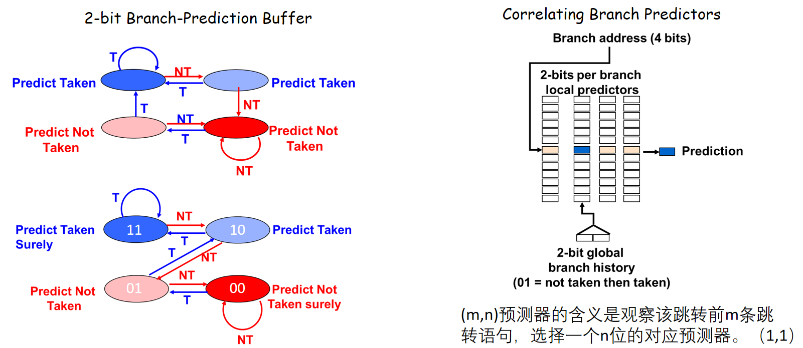
# 流水线的性能指标
- 吞吐率
单位时间内流水线所完成的任务数量
k 是流水线的段数，n 是任务数，Tk 是处理 n 个任务所用的总时间。理想状态下一条 k 段流水线能在 k+n-1 个时钟周期完成 n 个任务，吞吐率为
2. 流水线的加速比
完成同一批任务，不适用流水线和使用流水线所用的时间之比
理想状态下流水线加速比为\frac{k n}
# 高级流水线技术
- 超标量流水线
动态多发射技术，支持乱序执行
- Scoreboard
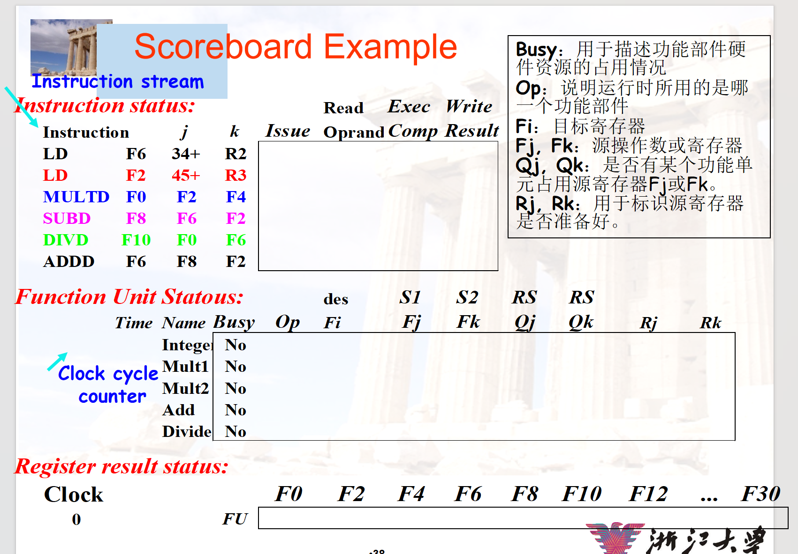 - Tomasulo
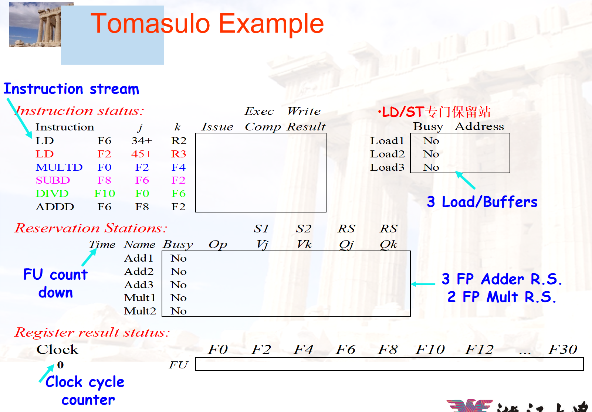
- 超长指令字技术
静态多发射技术，将多条能并行操作的指令组合成一个超长指令字，需要多个处理不见 - 超流水线技术
流水线功能段划分的越多，时钟周期越短，指令吞吐率越高。
超流水线技术通过提高流水线主频来提高性能，但是流水段越多中间寄存器的开销就越大
超流水线或者理想状态下流水线技术 CPI=1；多发射流水线的 CPI 可以小于 1
# 多处理器
# SISD SIMD MIMD
- SISD: single instruction single data
传统串行处理器 - SIMD: single instruction multiple data
数据级并行技术 (DLP)，一条指令可以同时对多个数据元素执行相同的操作，用到向量寄存器
在处理 for 循环数组时最有效（比如两个数组相加）；在使用 case/seitch 时效率最低 - MISD: multiple instruction single data
实际上不存在 - MIMD: multiple instruction multiple data
TLP
分为多计算机系统和多处理器系统。
多计算机系统由多个独立的计算机节点组成，每个节点通常包含自己的存储器、CPU，具有独立的主存地址空间，通过消息传递进行数据传送，也称消息传递MIMD
多处理器系统是共享存储多处理器SMP系统的简称，共享单一地址空间，也称共享存储 MIMD
向量处理器是 SIMD 的变体，实现了直接操作一维数组指令集
# 硬件多线程
- 细粒度多线程 Fine-grained multithreading
多个线程交叉执行指令，线程之间的指令不相关，可以乱序并行执行，需要频繁进行上下文切换，不需要重载流水线。牺牲单个线程执行的性能，来换取整个进程吞吐量的提升 - 粗粒度多线程 Coarse-grained multithreading
连续几个时钟周期都执行同一线程的指令序列，尽在当前线程出现较大开销的阻塞才切换（比如 L2 miss, L2 miss）相比细粒度多线程，上下文切换的频率较低，切换时需要重载流水线 - 同时多线程 SMT
ILP+TLP，指令级并行的同时实现线程级并行，在同一个时钟周期发射多个不同线程中的多条指令执行
Intal 的 Hyper-threading 就是 SMT
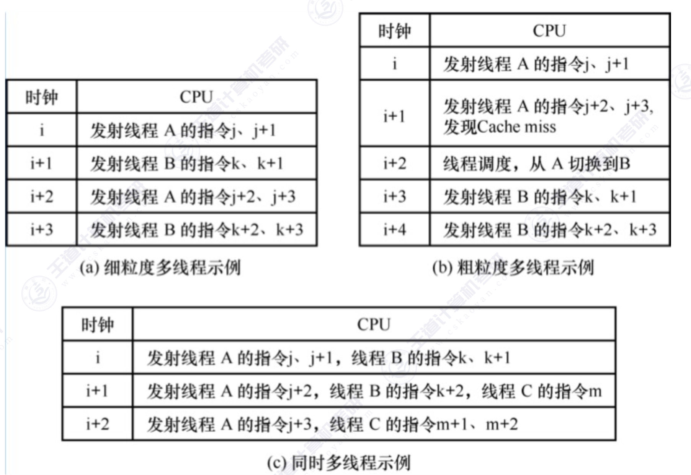
# 多核处理器
一个 CPU 有多个 core，也称片上多处理器
每个核既可以有自己的 Cache，又可以共享同一个 Cache，所有核共享主存储器
多核处理器必须采用多线程（或多进程）才能发挥性能
# 共享内存多处理器 SMP
处理器通过存储器中的共享变量互相通信，所有存储器都能通过存取指令访问存储器的任何位置，有两种：
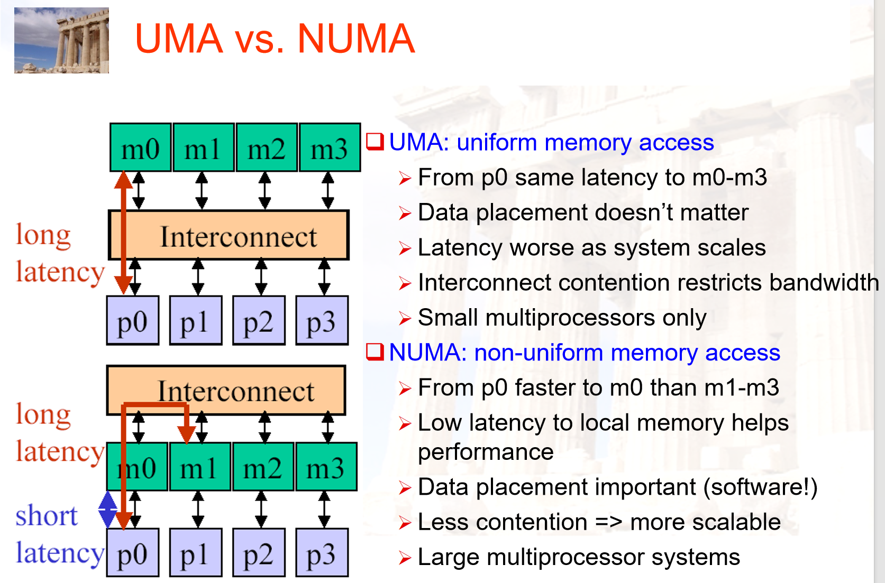
- UMA 统一存储访问多处理器
UMA 中所有处理器对所有内存模块的访问延迟是相同的，由于访问延迟一致，数据放在哪个内存模块上对性能影响不大。随着系统规模扩大，所有处理器都通过同一个前端总线访问内存，导致互连网络成为瓶颈，延迟增加，带宽受限
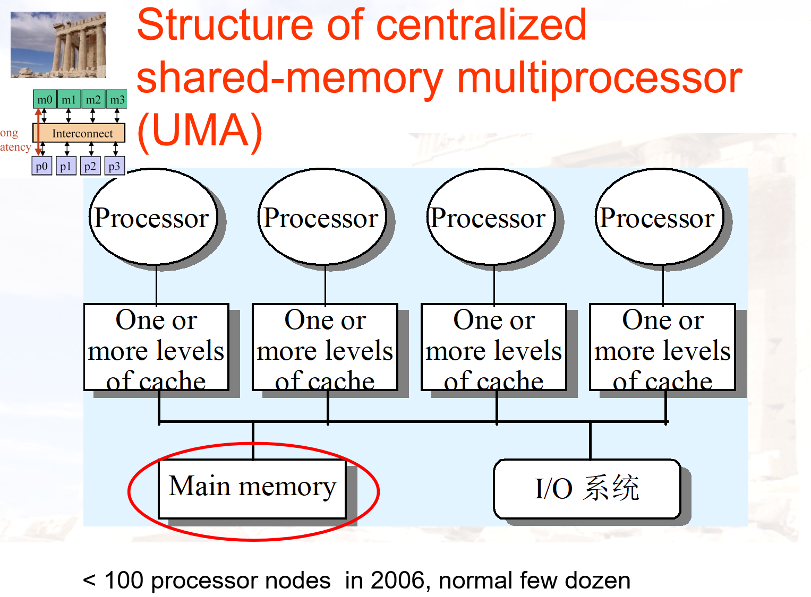 - NUMA 非统一存储访问多处理器
内存有本地内存和远程内存，访问本地内存快。CPU 可以通过 QPI 总线访问远程内存
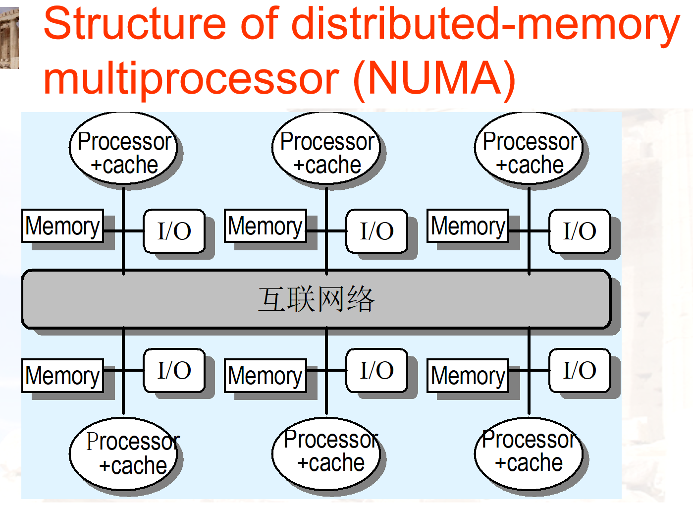 - 需要解决 Cache coherence 问题：Snooping (MSI, MESI, MOESI…), Directory
基本思想都是对共享变量加锁，保证互斥访问- Snooping:
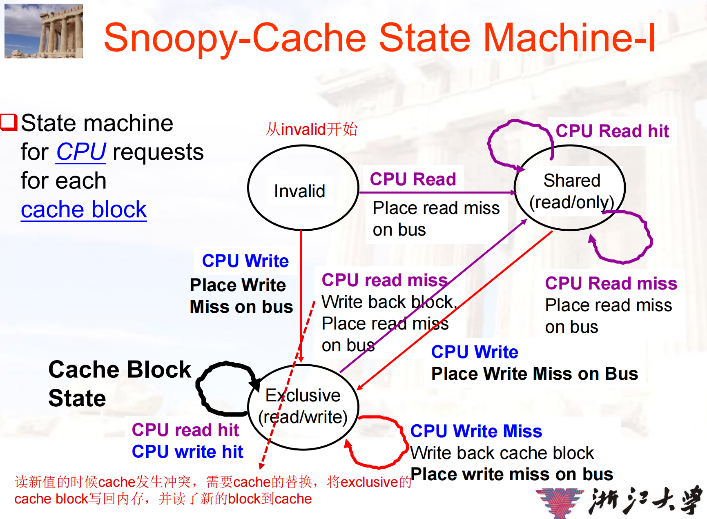
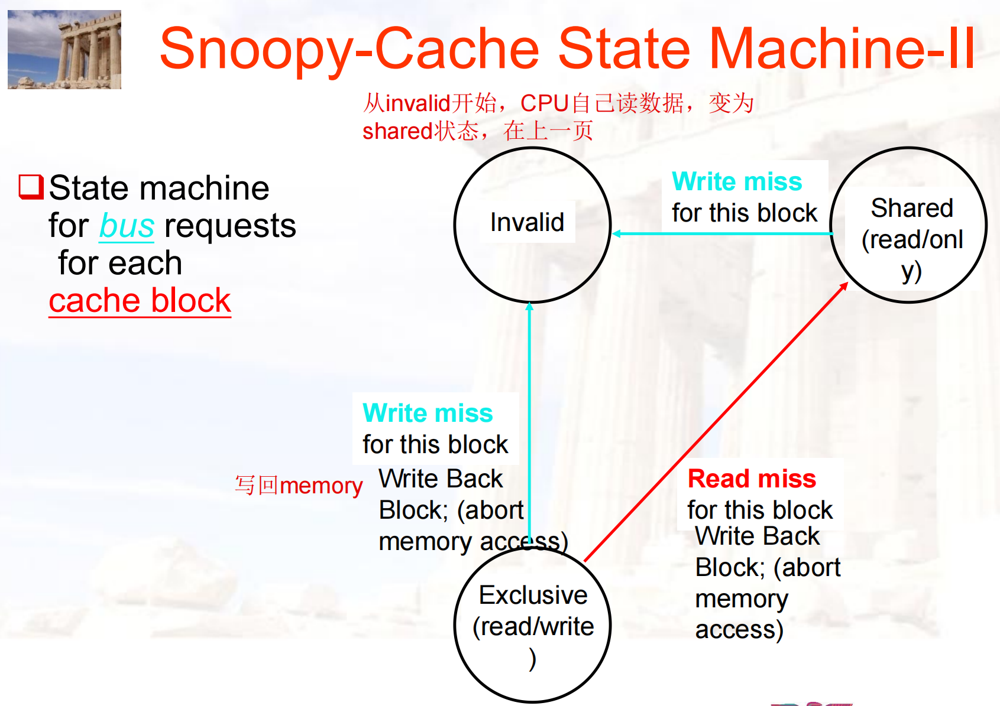 - Directory:
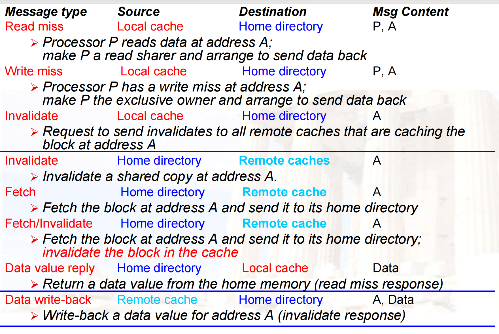
- Snooping: